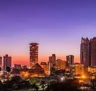

Nairobi is the vibrant capital of Kenya and one of Africa’s fastest-growing cities. Known as the “Green City in the Sun,” it blends modern urban life with rich culture and unique wildlife, including the nearby Nairobi National Park where animals roam against a city skyline. Nairobi serves as a major economic and technological hub in East Africa, offering diverse opportunities in business, education, and innovation.
